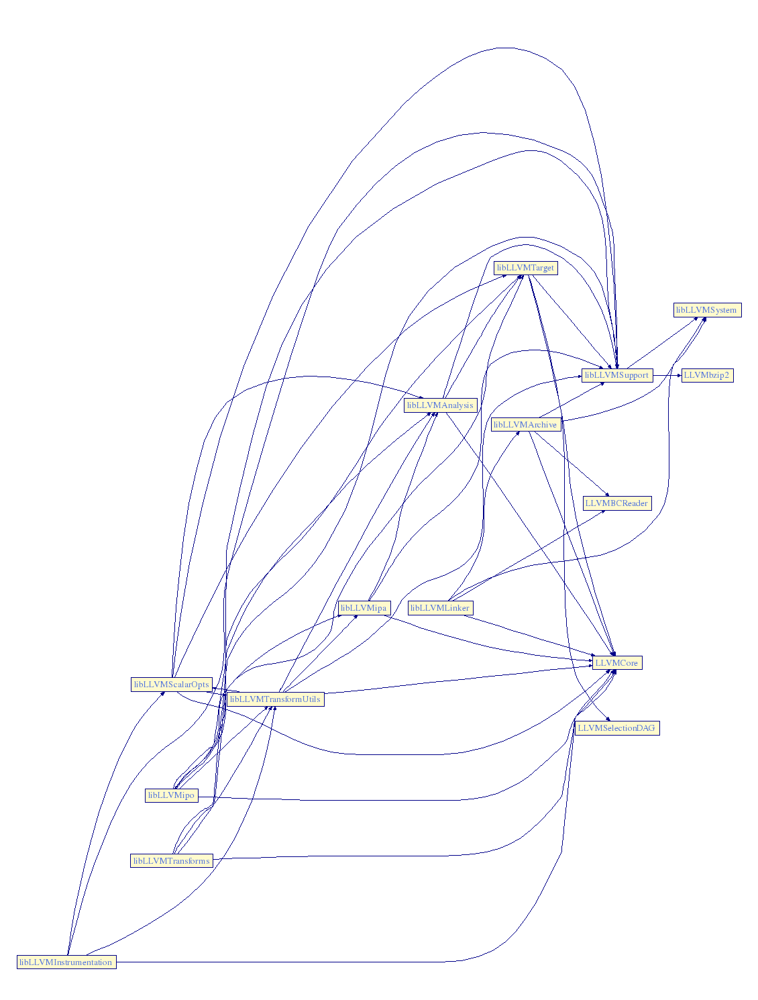
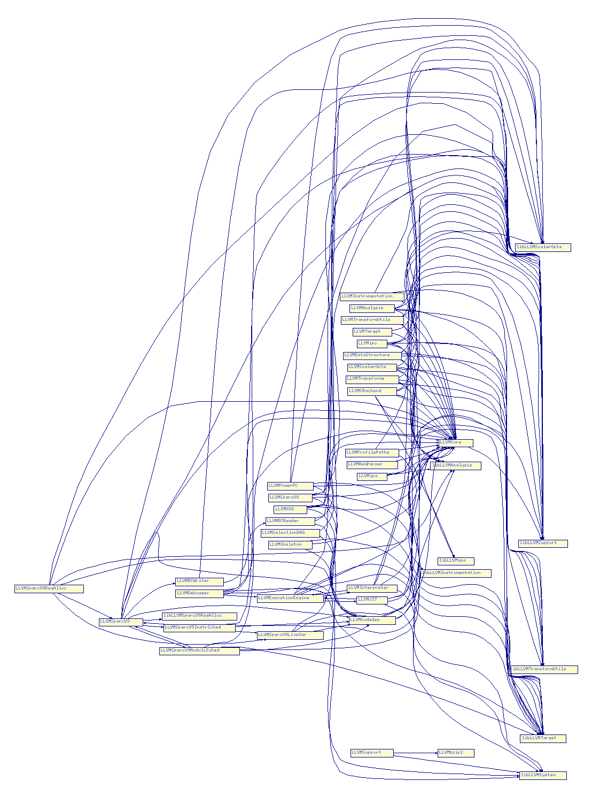

Last modified: $Date$
Warning: This document is out of date, please see llvm-config for more information.
Amongst other things, LLVM is a toolkit for building compilers, linkers, runtime executives, virtual machines, and other program execution related tools. In addition to the LLVM tool set, the functionality of LLVM is available through a set of libraries. To use LLVM as a toolkit for constructing tools, a developer needs to understand what is contained in the various libraries, what they depend on, and how to use them. This document describes the contents of the libraries and how and when to use them.
If you're writing a compiler, virtual machine, or any other utility based on LLVM, you'll need to figure out which of the many libraries files you will need to link with to be successful. An understanding of the contents of these files and their inter-relationships will be useful in coming up with an optimal specification for the libraries to link with. The purpose of this document is to reduce some of the trial and error that the author experienced in using LLVM.
LLVM produces two types of libraries: archives (ending in .a) and objects (ending in .o). However, both are libraries. Libraries ending in .o are known as re-linked libraries because they contain all the compilation units of the library linked together as a single .o file. Furthermore, many of the libraries have both forms of library. The re-linked libraries are used whenever you want to include all symbols from the library. The archive libraries are used whenever you want to only resolve outstanding symbols at that point in the link without including everything in the library.
When linking your tools, you will use the LLVMLIBS make variable. (see the Makefile Guide for details). This variable specifies which LLVM libraries to link into your tool and the order in which they will be linked. You specify re-linked libraries by naming the library without a suffix. You specify archive libraries by naming the library with a .a suffix but without the lib prefix. The order in which the libraries appear in the LLVMLIBS variable definition is the order in which they will be linked. Getting this order correct for your tool can sometimes be challenging.
The table below categorizes each library
| Library | Forms | Description |
|---|---|---|
| Core Libraries | ||
| LLVMArchive | .a | LLVM archive reading and writing |
| LLVMAsmParser | .o | LLVM assembly parsing |
| LLVMBCReader | .o | LLVM bytecode reading |
| LLVMBCWriter | .o | LLVM bytecode writing |
| LLVMCore | .o | LLVM core intermediate representation |
| LLVMDebugger | .o | Source level debugging support |
| LLVMLinker | .a | Bytecode and archive linking interface |
| LLVMSupport | .a .o | General support utilities |
| LLVMSystem | .a .o | Operating system abstraction layer |
| Analysis Libraries | ||
| LLVMAnalysis | .a .o | Various analysis passes. |
| LLVMDataStructure | .a .o | Data structure analysis passes. |
| LLVMipa | .a .o | Inter-procedural analysis passes. |
| Transformation Libraries | ||
| LLVMInstrumentation | .a .o | Instrumentation passes. |
| LLVMipo | .a .o | All inter-procedural optimization passes. |
| LLVMScalarOpts | .a .o | All scalar optimization passes. |
| LLVMTransforms | .a .o | Uncategorized transformation passes. |
| LLVMTransformUtils | .a .o | Transformation utilities. |
| LLVMProfilePaths | .o | Profile paths for instrumentation. |
| Code Generation Libraries | ||
| LLVMCodeGen | .o | Native code generation infrastructure |
| Target Libraries | ||
| LLVMCBackend | .o | 'C' language code generator. |
| LLVMPowerPC | .o | PowerPC code generation backend |
| LLVMSelectionDAG | .o | Aggressive instruction selector for directed acyclic graphs. |
| LLVMSkeleton | .a .o | Skeleton for a code generation backend. |
| LLVMSparc | .o | Code generation for Sparc. |
| LLVMSparcV9 | .o | Code generation for SparcV9. |
| LLVMSparcV9RegAlloc | .a .o | Graph-coloring register allocator for SparcV9. |
| LLVMSparcV9InstrSched | .o | Instruction scheduling for SparcV9. |
| LLVMSparcV9LiveVar | .o | Live variable analysis SparcV9. |
| LLVMSparcV9ModuloSched | .o | Modulo scheduling for SparcV9. |
| LLVMTarget | .a .o | Generic code generation utilities. |
| LLVMX86 | .o | Intel x86 code generation backend |
| Runtime Libraries | ||
| LLVMInterpreter | .o | Bytecode Interpreter |
| LLVMJIT | .o | Bytecode JIT Compiler |
| LLVMExecutionEngine | .o | Virtual machine engine |
| LLVMexecve | .o | execve(2) replacement for llee |
Below are two dependency graphs and a list that show the relationships between the various LLVM archive libraries and object files. This information can be automatically generated with the GenLibDeps.pl utility found in the llvm/utils directory.
This graph shows the dependency of archive libraries on other archive libraries or objects. Where a library has both archive and object forms, only the archive form is shown.
This graph shows the dependency of object files on archive libraries or other objects. Where a library has both object and archive forms, only the dependency to the archive form is shown.
The following list shows the dependency relationships between libraries in textual form. The information is the same as shown on the graphs but arranged alphabetically.
This section contains various "rules of thumb" about what files you should link into your programs.
No matter what you do with LLVM, the last three entries in the value of your LLVMLIBS make variable should always be: LLVMCore LLVMSupport.a LLVMSystem.a. There are no LLVM programs that don't depend on these three.
There is never any point to linking both the re-linked (.o) and the archive (.a) versions of a library. Since the re-linked version includes the entire library, the archive version will not resolve any symbols. You could even end up with link error if you place the archive version before the re-linked version on the linker's command line.